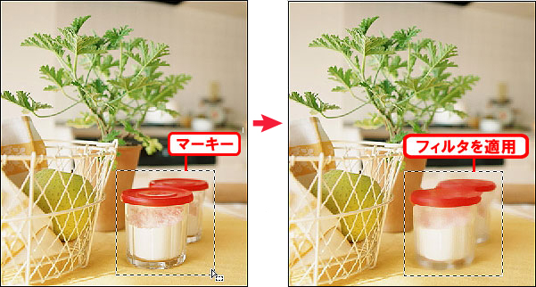

本章では、部分編集を行う際に使用する選択範囲について学習します。
本節では、実際に選択範囲を作成する練習を行います。
本章で使用する素材ファイルをダウンロードしましょう。
第4章素材ファイル
画像の編集を行うと通常は画像全体に適用されます。
しかし、選択範囲を使用することで適用される領域を制限することができます。
Photoshopでの制作作業において、画面全体に対して何らかの処理を行うことは少なく、
選択範囲を使って、修正箇所を限定するケースがほとんどです。
したがって、自在に選択範囲を作成できることが、
作業の効率や結果を大きく左右することになります。
選択範囲は、マーキーとも呼ばれる黒と白の点線状の境界線によって囲まれて表示されます。

Photoshopの選択範囲にはさまざまなツールが用意されています。
その他、さまざまな条件や方法で効率的に選択範囲を作成することができます。
選択範囲を作るためだけに、これだけ多くの機能が用意されているのは、
それだけ選択範囲を作成するという行為が、Photoshopの中で重要だからです。
これらより多くの選択範囲の作成方法を学習することで、作業効率や品質が良くなります。